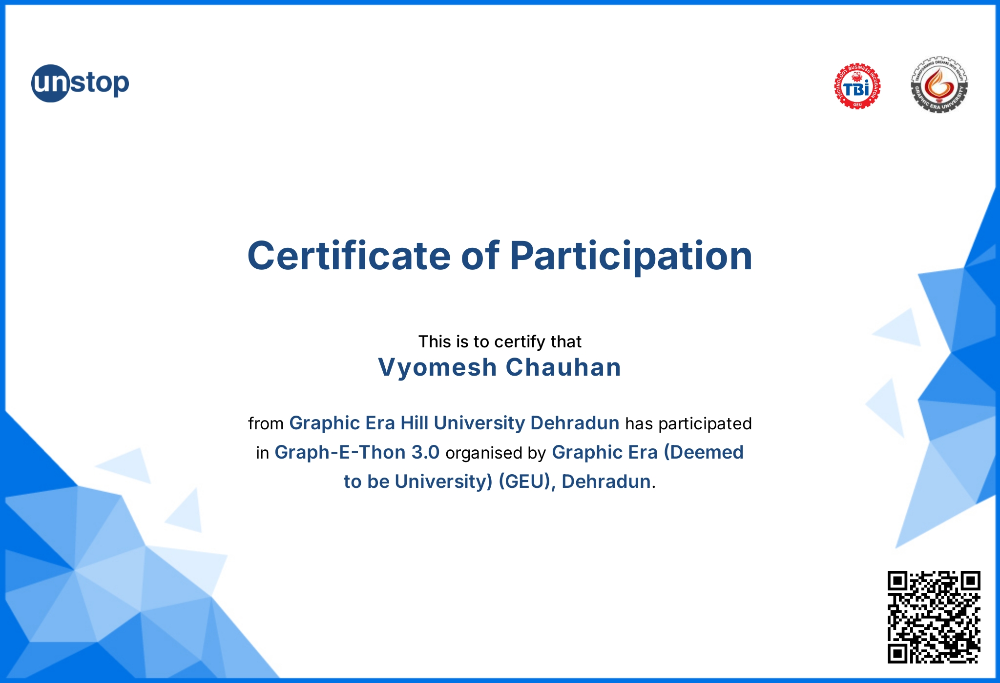

Hey, I'm
VYOMESH CHAUHAN
Cybersecurity Student
I learn to break things
so others can build them safer
Hey, I'm
I learn to break things
so others can build them safer
Get to know me better

I'm a Cybersecurity student who genuinely loves breaking things down — finding where systems are weak and figuring out how to fix them. I'm learning ethical hacking and penetration testing, not just as skills, but because security puzzles actually excite me. I care about building things that don't just work — but stay safe.
CS-1
2027
A collection of technologies I'm proficient with
Some things I've built
Built a file compression utility capable of reducing file sizes while maintaining data integrity across multiple formats (PDF, images, text, etc.). Implemented Huffman Coding, LZW, and zlib-based algorithms to achieve high compression ratios with lossless output.
Developed a graphical simulator for disk scheduling algorithms (FCFS, SSTF, SCAN, C-SCAN) to visually demonstrate sector access and head movement in real time. Reinforced foundational Operating Systems concepts by implementing algorithms in a hands-on programming environment.
Suraksha is an AI-powered tourist safety monitoring web application built to protect tourists in real-time using smart technology.
The system combines AI-based surveillance, Geo-Fencing, and Blockchain-enabled Digital ID verification to monitor tourist activity, detect incidents instantly, and trigger real-time alerts to the right authorities — before situations escalate.
My professional qualifications and courses



My daily learnings and lecture notes
Today's lecture focused on the art of Self Introduction — one of the most essential yet underestimated professional skills. The session was structured around the following key parameters:
A good self-introduction must be precise and to the point. Vague or lengthy introductions lose the listener's attention. Language must reflect clarity and be grammatically correct to leave a strong first impression.
It is not just what we say, but how we convey our message that matters. Tone, pace, and word choice collectively shape how the audience perceives us.
Confidence is the backbone of any introduction. Positive body language — eye contact, upright posture, and a steady voice — communicates assurance even before words are spoken. This applies across both formal settings (interviews, seminars) and informal environments (networking, social gatherings).
Every introduction must have a clear opening (who you are) and a purposeful closing (what you bring to the table), ensuring the listener walks away with a memorable impression.
Body language speaks louder than words. Maintaining eye contact, an upright posture, a warm smile, and open gestures significantly enhance the impact of a self-introduction. Avoiding crossed arms, fidgeting, or looking away builds trust and shows genuine confidence in any setting.
In this session, I delivered my personal self-introduction. Below is the recording of my presentation.
Most people don't fail at their jobs because they lack skill. They fail because they're drowning in repetitive tasks, missed follow-ups, scattered schedules, and mental overload. Comet fixes that.
At its core, Comet lives inside your workflow. It reads your emails, schedules your meetings, prioritizes your tasks, and follows up on things you forgot — all without you asking twice. Think of it less like a tool and more like a silent coworker who never sleeps.
What makes Comet different? It doesn't just automate tasks — it learns your patterns. The more you use it, the smarter it gets. It knows you respond to clients before 10am. It knows Friday afternoons are your deep work hours. It adapts.
Comet connects with tools you already use — Notion, Slack, Gmail, Calendar — and stitches them together into one intelligent flow.
No more context switching. No more dropping the ball. Just focused, intentional work.
Comet doesn't replace you. It removes everything that gets in your way.
Your work life, on autopilot.
Most people hear blockchain and immediately think Bitcoin. But that's like hearing 'internet' and only thinking about email. One small use case of something enormous.
Blockchain is so much bigger than that.
At its core, blockchain is a system of recording information that nobody can hack, change, or cheat. It's a digital ledger — transparent, decentralized, and permanent. Every entry is locked in. Every transaction is visible. And no single person, company, or government controls it.
Now apply that to real life.
Hospitals using blockchain to secure patient records — so your medical history can't be altered, leaked, or lost. Governments running tamper-proof elections — where every vote is recorded and nobody can stuff the ballot. Supply chains tracking every single step a product takes — from the factory floor to your doorstep — so you actually know what you're buying and where it came from.
Artists protecting their work through NFTs — finally owning their own creativity in a digital world that constantly steals it. Students having their college degrees verified on blockchain — so no one can ever fake a certificate again.
And here's what ties all of this together.
The technology isn't about currency. It was never really about currency. It's about trust.
Think about how many systems in our world rely on a middleman. A bank to verify your money. A notary to verify your documents. A government to verify your identity. Blockchain removes that middleman entirely. It makes trust automatic. Mathematical. Unbreakable.
In a world where data gets manipulated, systems get hacked, and people in power rewrite narratives — blockchain offers something genuinely rare.
A record that tells the truth.
Not because someone promised it would. Not because a company guarantees it. But because the math behind it makes lying literally impossible.
And that — in a world full of misinformation and broken systems — that changes everything.
Sir started by explaining that essay writing directly improves our communication skills. As CSE students we constantly need to explain technical ideas — in exams, reports, or team meetings. Writing trains us to organize thoughts logically and explain complex concepts clearly to both technical and non-technical audiences.
He also pointed out how essay writing helps in academic success — whether it's descriptive exam answers, research assignments, or seminar reports. It's a skill we use more than we realize.
One thing that really stood out was how writing builds critical and analytical thinking. It trains you to analyze problems deeply, compare different technologies or approaches, and form well-reasoned arguments — which directly connects to algorithm design and problem-solving in CSE.
Sir also highlighted that real-world software engineers write constantly — documentation, system design explanations, user manuals. Essay writing builds exactly the clarity and precision that good documentation demands.
For placements and higher studies, strong writing matters too — SOPs, research proposals, HR rounds — companies value engineers who can think well and express clearly.
And looking long term, as we grow into leadership roles, writing becomes how we propose ideas, lead teams, and present strategies. Sir summed it up well — essay writing lays the foundation for professional growth and communication.
Finally, he mentioned something simple but true — when you can express your thoughts clearly, your confidence grows. And confidence shows up everywhere — in public speaking, in interviews, in your overall personality.
The big takeaway from today's class — essay writing isn't just an English exercise. For a CSE student, it's a core professional skill.
Today sir taught us the key techniques of Group Discussion and how to perform confidently and effectively in a GD round.
Here's what was covered in class:
Sir started by clearing a common misconception — GD is not about who talks the most, it's about who adds the most value. That one line changed how I thought about it.
He walked us through five core techniques. First, how you enter matters — if you get a chance to speak early, take it with a strong point or fact, not just a repetition of the topic. If you can't open, build on what others say — it shows you're both listening and thinking.
Second, quality beats quantity. Speaking fewer times with meaningful points is far better than talking constantly with nothing valuable. Evaluators watch your thinking, not your word count.
Third, body language plays a huge role — sitting forward, making eye contact with the group, and staying engaged even when not speaking all signal confidence and leadership.
Fourth, sir emphasized never getting aggressive or personal. Disagreeing is healthy but always frame it respectfully — "I see it differently" rather than "You're wrong."
Fifth and finally, learn to summarize. Closing a GD with a crisp neutral summary covering all sides shows maturity and listening ability — exactly what evaluators look for.
The big takeaway from today's class — a GD tests whether you can think on your feet and work with people at the same time. Prepare your thoughts, respect the room, and speak with purpose.
Today in class we had a Group Discussion on Data Privacy — here are the points I contributed and how I approached the GD.
My first point was about how most data breaches don't happen from the main company itself — it's the third parties they share our data with. You trust one app, but that app quietly shares your data with ten others. When any one of those gets compromised, your information is already gone — and you never even knew it was there.
I raised that every app shows a Terms & Conditions page but nobody actually reads it. By clicking "I Agree" we willingly hand over our location, contacts, browsing habits and sometimes even microphone access. The threat isn't always hackers — sometimes it's our own carelessness.
When someone in the GD suggested governments should fix data privacy, I countered that governments themselves are often the ones collecting our data. Surveillance laws and data retention policies mean your private information is legally accessible to authorities — without you ever knowing.
I closed the GD with this — and I meant it. Data privacy at this point is not just a risk or a concern — it's a myth. Your phone listens, your searches get tracked, your data gets packaged and sold to people you've never met. The question now isn't how do we protect privacy — it's how do we survive without it.
Today sir taught us how to write a resume that actually gets past ATS — Applicant Tracking System — the software companies use to filter resumes before a human even sees them. This was genuinely one of the most practical classes so far.
Here's what was covered:
Sir started with format. Always use a single column resume — no tables, no text boxes, no graphics, no icons. Just one clean vertical flow of text. File format should be either .docx or a text-based PDF, never a scanned or image-based resume.
Next he covered headings. Always use standard conventional headings like Professional Summary, Skills, Work Experience, Education, Certifications and Projects. Creative headings like "My Journey" or "What I Bring" confuse ATS systems and get rejected instantly.
One of the most important points was keyword optimization. ATS literally scores your resume by matching it against the job description. Sir said — copy the exact keywords from the JD and place them naturally in your summary, skills and experience sections. If the job says Python, SQL, Power BI — your resume needs those exact words.
For the Skills section, always keep it as a dedicated bullet list — never write skills in paragraph form. Separate technical and soft skills clearly.
Sir also taught us to quantify achievements instead of listing duties. Don't say "responsible for teaching students" — say "taught communication skills to 120+ students with 95% completion rate." Numbers make you credible.
Font wise — stick to Calibri, Arial, Times New Roman or Verdana. Body text 10.5 to 12, headings 13 to 14. And avoid ATS killers — no photos, no columns, no fancy templates, no icons, and never put important information in headers or footers.
The golden rule sir gave us — Simple format plus exact keywords plus customization for every job. Target a minimum ATS score of 75% and aim for 85 to 95% for a strong profile.